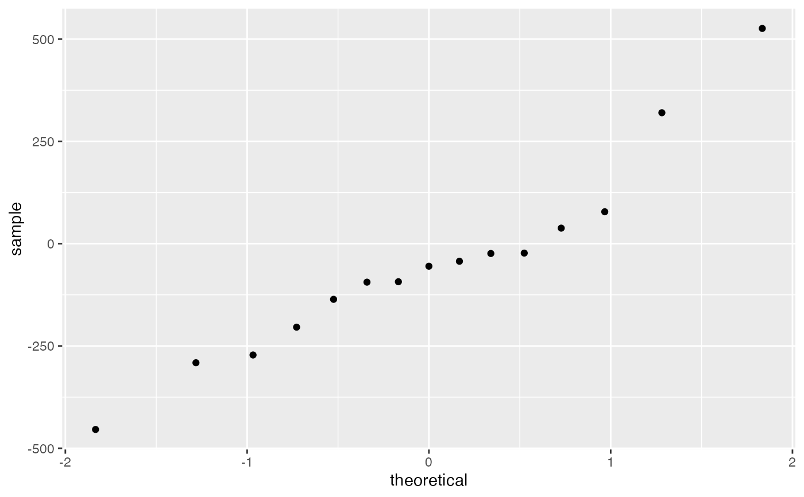

The effect of a single 600 mg dose of ascorbic acid versus a sugar placebo on the muscular endurance (as measured by repetitive grip strength trials) of fifteen male volunteers (19-23 years old).
Format
A data frame with 15 observations on the following 5 variables.
Vitamin number of repetitions until reaching 50 maximal grip after taking viatimin
First which treatment was done first, a factor with levels
PlaceboVitaminPlacebo number of repetitions until reaching 50 strength after taking placebo
Source
These data are available from OzDASL, the Australasian data and story library (http://www.statsci.org/data/).
Details
Three initial maximal contractions were performed for each subject, with the greatest value indicating maximal grip strength. Muscular endurance was measured by having the subjects squeeze the dynamometer, hold the contraction for three seconds, and repeat continuously until a value of 50 maximum grip strength was achieved for three consecutive contractions. Endurance was defined as the number of repetitions required to go from maximum grip strength to the initial 50 positive verbal encouragement in an effort to have them complete as many repetitions as possible.
The study was conducted in a double-blind manner with crossover.
References
Keith, R. E., and Merrill, E. (1983). The effects of vitamin C on maximum grip strength and muscular endurance. Journal of Sports Medicine and Physical Fitness, 23, 253-256.
Examples
data(Endurance)#> Warning: data set ‘Endurance’ not foundt.test(Endurance$vitamin, Endurance$placebo, paired = TRUE)#> #> Paired t-test #> #> data: Endurance$vitamin and Endurance$placebo #> t = -0.78538, df = 14, p-value = 0.4453 #> alternative hypothesis: true difference in means is not equal to 0 #> 95 percent confidence interval: #> -180.82308 83.88975 #> sample estimates: #> mean of the differences #> -48.46667 #>t.test(log(Endurance$vitamin), log(Endurance$placebo), paired = TRUE)#> #> Paired t-test #> #> data: log(Endurance$vitamin) and log(Endurance$placebo) #> t = -1.8968, df = 14, p-value = 0.07868 #> alternative hypothesis: true difference in means is not equal to 0 #> 95 percent confidence interval: #> -0.56304724 0.03455067 #> sample estimates: #> mean of the differences #> -0.2642483 #>t.test(1/Endurance$vitamin, 1/Endurance$placebo, paired = TRUE)#> #> Paired t-test #> #> data: 1/Endurance$vitamin and 1/Endurance$placebo #> t = 2.4111, df = 14, p-value = 0.03022 #> alternative hypothesis: true difference in means is not equal to 0 #> 95 percent confidence interval: #> 0.0001377454 0.0023561868 #> sample estimates: #> mean of the differences #> 0.001246966 #>gf_qq( ~ vitamin - placebo, data = Endurance)gf_qq( ~ log(vitamin) - log(placebo), data = Endurance)gf_qq( ~ 1/vitamin - 1/placebo, data = Endurance)